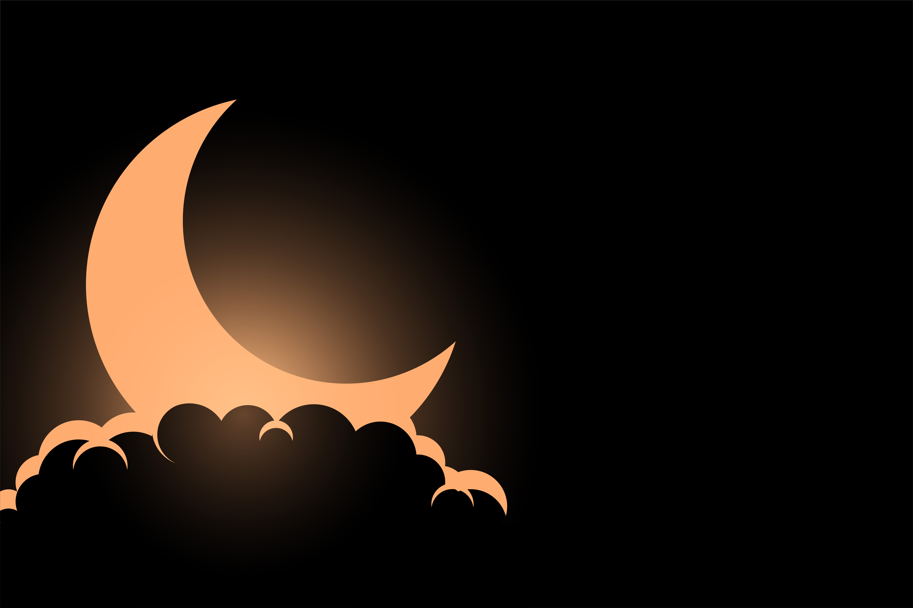

TeamRamadan20
Eh oui ! Nous sommes déjà entrer dans les 10 dernières nuits du mois de Ramadan dans laquelle se trouve Laylat al-Qadr. La tradition prophétique indique qu'il faut redoubler d'efforts dans l'adoration pour espérer La Récompense d'Allah et Son Pardon. Lorsque le Prophète (صَلَّىٰ اللّٰهُ عَلَيْهِ وَسَلَّم) entrait dans les 10 derniers jours de Ramadan, il redoublait d'efforts, dans la recherche de la nuit d’Al-Qadr. Qu'Allah nous facilite !
